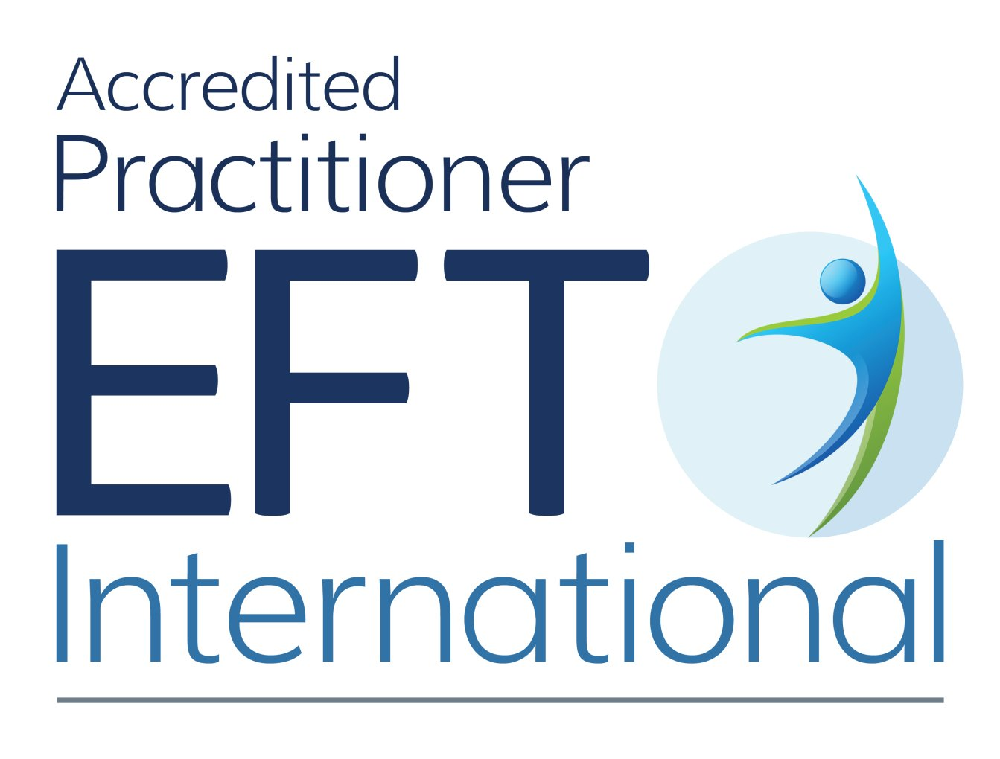

So, who am I? My first love was science and I worked in clinical research, until I experienced not one but two episodes of burnout. That led me to counselling for the first time — as prior to that, I was a person who resisted it. It wasn’t the type of thing that people like I did, strong people who were capable of pushing through anything thrown at them.
Except this wasn’t true. I had limits just like anyone else and that’s not a failing. In fact, it’s a strength to be aware of when you need some help and to be able to ask for it.
Counselling provided me with a space to explore what was going on without judgement or interruption and allowed me to develop a different perspective. Hopefully, it’s something that you can find out too.
My approach
Your description of your approach goes here.
Training and qualifications

Accredited Member of EFT International Mental Health First Aider NCPS Member STU545Why Firecrest
I am a bird nerd; I love watching and listening to birds while they go about their day. Listening to their melodic songs, I imagine that they’re actually saying something really mundane like what they’re having for tea or which gardens have the best feeders.
But why firecrests specifically? Firecrests are one of the smallest birds in the UK and their Latin name, regulus ignicapilla, roughly translates to fire-capped little king. They may be small but they are mighty! These tiny birds make it all the way across the North Sea to get here, and I really connected to the symbolism of that resilience. Even though firecrests weigh little more than a teaspoon of sugar, they make the perilous journey through bad weather, strong winds and rough seas to get to the other side.
It is also said that firecrests symbolise courage, resilience, strength and progress. Sometimes, this is what therapy takes; courage to realise that something needs to change and it is up to you to do it; resilience to keep making your way through even when it is hard, even when it is painful; strength to be kind to yourself and show yourself true compassion.
Progress however is a little trickier. Progress is difficult to measure, can go in waves rather than straight lines and be frustrating or deflating in those moments when it is elusive. But once you are there and looking back to where you have come from to where you are now, it is not too dissimilar to the journey that tiny bird takes, except you’ve come to land in the new safety of yourself.
I couldn’t think of anything more fitting to name my practice.
Book a free 20-minute consultation